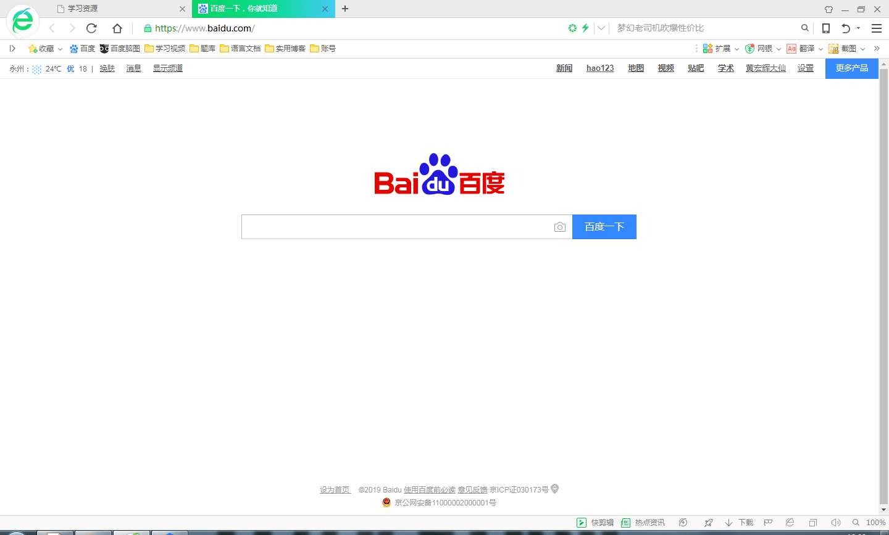

|  | 百度 | 访问百度的接口 |
| 学生管理系统 |
访问学校的学生管理系统，可以进行选课, 查看课表，查看成绩 |
|
| 校园ftp |
访问学校的ftp服务器，可以做一个文件的中转站, 将自己在学校机房里的文件先存到这上面， 回到寝室之后再将文件存到自己电脑上 |
|
| 中科大镜像站 |
中国科学院大学的镜像站，可以下载到许多Linux相关的软件 有些软件的服务器在国外，通过这个渠道下载速度会很快 |
|
| CSDN |
计算机专业必上的网站，上面有国内IT行业最前沿的信息 各种技术教程 |
|
| 中国知网 |
大学生福利，在校内访问这个网站可以免费下载论文 过了这个村可就没有这个店了， 想做什么项目之前先去这个网站上搜搜相关论文， 了解别人已经做到哪了 |
|
| 学堂在线 |
国内最早的课程直播平台MOOC的一个分支， 由清华大学授权的专属直播平台，上面有清华， 哈佛，斯坦福，牛津大学等世界级名校的课程直播 |
|
| 北京大学oj |
北京大学的ACM题库，一群和自己过不去的小伙伴 日常所在的平台，又称同性交友平台 |
|
| vmware14下安装win7x64 | 教你怎么在vware14中安装win7系统 |